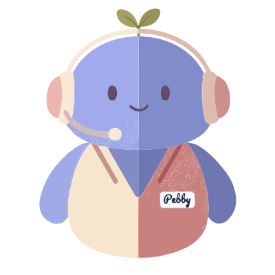

The idea
An AI-native business, front desk to back office
Most small spas still run on phone calls, paper notes and spreadsheets. Customers call to ask what a facial costs, whether a treatment is safe during pregnancy or how to cancel. Owners dig through records to see how last month went.
Spa Desk puts the whole business online with AI built in from the start. Anything a customer needs to know is one question away, and anything the owner wants to know about the business is too.
What we built
Two views, one assistant
Everything comes from two files: a written guide for what the spa offers, and the booking records for what happened. Both views read the same files, so they never disagree.
Customer view
- A landing page built from the spa's guide: services, prices, packages, policies, timetable and team
- A booking request form
- Pebby in a chat panel on the side
Owner view
- The business profile, read straight from the guide
- A reports dashboard from a year of bookings: revenue, cancellations, channels and feedback
- Filters by date, category and channel
- Pebby on every tab

Pebby, the AI virtual assistant
- Answers in seconds, day or night, so customers don't wait on the phone
- Only says what the spa has written, and shows where each answer came from
- Says "I don't know" instead of guessing
- Gives the owner real figures for any period, with what changed and why
- Keeps private data private: the customer side never sees bookings or revenue
Why we built it
Do more with less, and get it right every time
A small spa can't keep someone on the phone all day. Customers wait on hold for a simple answer, and the owner spends evenings piecing reports together by hand. That friction costs bookings and time.
- Less customer friction. Answers come instantly, day or night, with no call and no wait.
- More done with fewer people. The routine questions and the number-crunching are automated, so the team can focus on guests.
- Fewer human errors. When the portal is AI-native, every answer comes from one source of truth instead of someone's memory or an old spreadsheet.
Automation only helps if it can be trusted. So Pebby only says what the spa has written down, shows where each answer came from, and says "I don't know" when the answer isn't there. For the owner, every figure comes straight from the booking records; Pebby never estimates a number.
Architecture
From question to trusted answer
Both sides share the same guide, search and Claude model. What each side is allowed to reach is different.
Customer side
flowchart TD Q([Customer asks Pebby]) --> S["Search
find the 20 closest pieces of the guide"] S --> R["Rerank
keep the best 7"] R --> P["Context window
rules, current time, the 7 pieces, the question"] P --> C["Claude
writes a structured answer"] C --> K["Check
real sources only"] K --> A([Answer with its sources]) C -.-> L[(LangSmith traces)]
The context window is everything Claude reads for one question. Claude remembers nothing about the spa between questions, so the server packs it fresh each time: the rules Pebby follows, the spa's current date and time (Claude has no clock), the 7 pieces of the guide, and the customer's question. Claude answers from this alone. Sending 7 pieces instead of the whole guide keeps it small, which is why RAG costs less.
Runs on the LangChain pipeline. No tools and no booking data, so revenue and other customers' visits are out of reach.
Owner side: a LangGraph graph
flowchart TD START([Owner asks Pebby]) --> prepare prepare["prepare
find the best 7 pieces,
build the context window"] --> agent agent["agent
Claude reads everything so far"] --> next{"next_step
did Claude ask
for a report?"} next -->|"yes, and rounds left (max 4)"| tools["tools
run get_report
for the dates asked"] tools <--> B[(Booking records)] tools -->|"figures go back"| agent next -->|"no: it answered"| END([Answer with figures,
insights and the period used]) agent -.-> L[(LangSmith traces)]
The step names are the ones in the LangSmith trace: prepare, agent, next_step, tools. A profile question goes prepare → agent → answer; "last month" goes round the loop once.
Why the owner side is a graph: the figures aren't in the context window yet. Claude asks for a report, the app runs it, and Claude answers, and Claude decides how many times: none for a profile question, one for "last month". A fixed chain calls Claude once and stops, so this loop runs as a LangGraph graph, with at most 4 rounds of tools.
Claude only asks; the app runs the report, using the same code that fills the dashboard.
Made with FastAPI, plain JavaScript, Claude Opus 5.5, Chroma, the all-MiniLM-L6-v2 embedding model, a small cross-encoder reranker, LangChain, LangGraph and LangSmith.
What's done so far
From a working chatbot to measured, trusted answers
-
Week 1
Vibe-coded app and chatbot
- Built the customer site, owner dashboard and Pebby
- Pebby was sent the whole guide with every question
- Observation
- Highly accurate answers
- Issue
- High cost: every question pays for the whole guide, and bigger documents won't fit
Example: "What time do you open?" sent the whole 4,000-token guide to answer a one-line question.
- Fix
- Introduce RAG
-
Week 2 (This week) · Step 1
Introduced RAG, cut by section
- Cut the guide by its own layout: one piece per heading or service
- Each piece turned into a vector and stored in Chroma
- Observation
- Every piece fit, the largest at about 140 tokens
- Issue
- The embedding model reads only the first 256 tokens of a piece and silently drops the rest. A long section would become unsearchable, with no error
Example: our largest piece, "About", was already 140 of the 256 tokens. One long policy added later would have been cut off without any warning.
- Fix
- Cut by fixed size instead
-
Week 2 (This week) · Step 2
Switched to fixed-size pieces with overlap
- Fixed 150-token pieces, each repeating the last 30 tokens of the one before, so no fact is lost at a cut
- Each piece stores its section names as metadata, used to show the answer's source
- Send Pebby only the 7 pieces closest to the question
- Added a switch to toggle RAG on and off, to see the difference
- Observation
- Answers looked right when tried by hand
- Issue
- No way to see which pieces were picked, or what each question cost
Example: to see what "What are your hours?" picked, we had to run a script by hand. It showed the hours split across two pieces.
- Fix
- Add LangSmith
-
Week 2 (This week) · Step 3
Onboarded LangSmith
- Every question is traced: pieces picked and their scores, the exact prompt, the reply, tokens and time
- Added the owner's report tool: Pebby asks for figures instead of guessing
- Observation
- We could see exactly what Pebby read for each answer
- Issue
- Checking answers one by one doesn't scale
Example: after every change we re-asked questions in the chat by hand, with nothing to compare against.
- Fix
- Build a golden test set
-
Week 2 (This week) · Step 4
Built evals: a golden set of 61 questions
- Prices, hours, safety, privacy and owner questions, each with its expected answer
- Every question asked with RAG on and off
- Code checks the facts; a second Claude call grades yes/no and safety answers
- Each run labelled in LangSmith, to compare runs
- Observation
- RAG got 54/60, the whole guide 59/60
- RAG used half the tokens and cost 43% less
- Our first retrieval score said 92%, yet answers were missing
- Issue
- The piece with the answer fell outside the top 7. The yoga studio's Sunday hours sit at the start of a piece that's mostly about facials, so the search ranked it 21st
- The score checked the topic, not the exact answer
Example: any yoga piece coming back counted as a hit for a yoga question, even when the piece with the answer was missing. It counted 3 of the failed answers as successes.
- Fix
- Reranker (next step)
- Exact-line check: each question names the line holding its answer; an honest 83% that predicts failures for free
-
Week 2 (This week) · Step 5
Added reranking
- Fetch the 20 closest pieces
- A small model on our machine reads each one with the question and keeps the best 7
- Observation
- RAG 54 → 56 of 60; answer piece in the top 7: 24 → 26 of 29
- Same cost: Pebby still reads 7 pieces
- Issue
- It fixed 4 questions whose answer ranked just outside the top 7 (8th to 13th), but made 2 worse, and 1 is still missed:
- Made worse: "u guys open sat?" The reranker reads text like full sentences, so slang like "sat" for Saturday gave it little to match, and the hours piece dropped out of the 7.
- Made worse: "List the yoga classes". The timetable is spread over several pieces. The reranker kept only the pieces that scored best, so some classes were left out of the answer.
- Still missed: the yoga studio's Sunday hours. That line sits at the start of a piece that's mostly about facials, so both the search and the reranker treat the piece as a facials piece.
- Fix
- Planned next: write each piece's section name into its text before it's turned into a vector, so a piece that starts with yoga hours is seen as yoga. It found 27 of 29 answers in a test
-
Week 2 (This week) · Step 6
Checked the answers, and our tests
- Read every failing answer
- Observation
- "Can I bring my kid?" got a list of kids' services, not a yes or no
- Some failures were correct answers
- Issue
- Pebby answered nearby facts instead of the question
- Our tests looked for exact words, like "phone" when the answer said "call us"
Example: the grader (a second Claude call) doesn't see the guide. It failed a correct answer that suggested the Bridal Glow Prep Package, because it couldn't tell the package was real.
- Fix
- New rule: answer what was asked first
- Fixed tests: grade the answer, not the wording
-
Week 2 (This week) · Step 7
Onboarded LangChain
- The same pipeline rebuilt with LangChain parts
- A setting switches between the hand-built and LangChain pipelines
- Observation
- Our hand-built pipeline worked well
- Issue
- Swapping a provider, like Chroma for Pinecone, meant writing our own adapter
Example: our vector store worked only with Chroma. Moving to Pinecone meant writing and testing a new store ourselves.
- Fix
- LangChain parts: every provider is a setting, with the same results (RAG 57/61, whole guide 61/61)
-
Week 2 (This week) · Step 8
Owner chat on LangGraph
- The owner's tool loop rebuilt as a graph: prepare, agent, tools, back to agent
- The same setting switches both chats between hand-built and LangChain
- Observation
- The customer chat moved to a LangChain chain, but the owner chat couldn't
- Issue
- A chain calls Claude once. The owner chat needs a loop, because Claude decides how many reports it needs
Example: "How did we do last month?" took two Claude calls: the first asked for two reports at once, the second answered from them.
- Fix
- A LangGraph graph with a limit of 4 tool rounds. The trace shows every step: prepare 0.15 s, agent 3 s, two reports in 0.01 s, agent 12 s
-
Week 3 · Now
Contextual chunk headers
- Each piece gets its place in the guide written above it, as a path from the top, e.g. "Location and Hours > Yoga Studio Hours"
- Used for search only: embedded and reranked with the piece, never sent to Claude
- Guards: a 50-token budget, and a check that piece + header fit what the embedding model reads (256 tokens)
- Observation
- "What are the yoga studio hours on Sunday?" failed with RAG in all three paid runs. Pebby gave the opening time but not the closing time
- Issue
- The cut fell in the middle of the Sunday line. One piece had the "Yoga Studio Hours" title but stopped at "8:00 AM –"; the next had the full line but no title and was mostly about facials, so it ranked 21st
Example: putting the header in the embedding alone changed nothing (26 of 29). The search found the piece, but the reranker, reading plain text, dropped it again.
- Fix
- Headers in both the embedding and the reranker: the answer's piece now reaches the top 7 for 28 of 29 questions, and the Sunday piece ranks 2nd. The paid run fixed the Sunday hours and the yoga class list
Two switches to compare
RAG on / off
A toggle in the chat. Off sends the whole guide; on sends the best 7 pieces. Shows what RAG gains and costs.
Hand-built / LangChain
A server setting (SPADESK_RAG_ENGINE) for both chats: a chain for customers, a graph for the owner. Same steps; tests prove they match.
| Version | Correct answers with RAG | Right passage found |
|---|---|---|
| RAG on, first version | 54 of 60 (90%) | 24 of 29 (83%) |
| + reranker | 56 of 60 (93%) | 26 of 29 (90%) |
| + LangChain and "answer what was asked" | 57 of 61 (93%) | 26 of 29 (90%) |
| + contextual chunk headers | 57 of 60 graded* | 28 of 29 (97%) |
* The API credit ran out on the last grading call, so one answer that passed in every earlier run wasn't graded. Two of the three failures were grading criteria stricter than the guide (Botox, acne), loosened since.
The trade-off: RAG costs 43% less and uses half the tokens. Reading the whole guide scored a perfect 61 of 61 in the latest run, because this guide is still small enough to fit.
Measured in LangSmith
What Pebby costs, and how fast it answers
LangSmith records every question Pebby answers: what it read, how much text it used, what it cost and how long it took. We used it to measure every test run. A test run asks all 61 questions twice, once with RAG on and once with it off, plus the grading.
RAG on vs off, for the same 60 questions
| RAG off (whole guide) | RAG on (7 pieces) | |
|---|---|---|
| Cost | $3.12 | $1.79 |
| Text Pebby reads per question | about 9,000 tokens | about 4,000 tokens |
| Typical answer time | 4.0 s | 5.4 s |
What it tells us
- RAG halves the text Pebby reads, so it costs less. The saving grows as the guide grows.
- RAG isn't faster. Finding the pieces adds a step, and writing the answer takes most of the time.
- Our improvements were free. Each full test run cost about the same: $4.90 at the start, $4.95 with the reranker, $5.07 with LangChain. The reranker runs on our own machine, and Pebby still reads 7 pieces.
- The next saving is caching. Every question resends the same instructions, and none of it is reused today.
What we learned
Six lessons worth keeping
It's usually the search, not the AI
When an answer was wrong, the right passage almost never reached the model. How the guide is cut matters as much as the model.
"I don't know" is a feature
Every time the search missed, Pebby said it couldn't find the answer instead of guessing.
Measure the exact thing
A precise score made every later decision easy, and cost nothing to run.
Every fix has a side effect
The reranker rescued four answers and hurt two, including the casual "u guys open sat?".
Frameworks don't decide for you
LangChain brought ready-made parts, but the key choices stayed ours. Building it by hand first made the LangChain version easy to trust.
Tools need a loop
If everything Claude needs is in the prompt, one call is enough. If Claude must ask for data, the app needs a loop, and that's when a graph earns its place.
What's next
Getting Spa Desk ready for real spas
- Headers for Claude too: show each piece's place in the guide in the context window, measured with a paid run
- Casual questions: "u guys open sat?" is still missed; rewriting slang before searching is one option
- Pebby searches only when needed: today the guide is searched even for report questions; as a tool, Claude would decide
- Leaner reports: send Claude only the figures it needs, to cut the answer time and tokens
- A graceful limit: when tool rounds run out, answer from what's been found instead of an error
- Remembers the conversation, so follow-up questions just work
- Hands off to the front desk when it can't help
- Lower cost: cache the instructions that every question repeats
- Always up to date: the guide moves to cloud storage and refreshes when the owner edits it
- Ready to go live: an owner login, then public hosting